FR1One manifest, every agent
aio-context.md — rules, disclosure line and detected agents; the catalog itself stays live at ask time, shared by every CLI.
aio writes the context blocks & manifest that 8 agent CLIs read on every turn — wired in one command. On every prompt they run aio ask: a live search across GitHub (630M+ repos), npm (3M+) and crates (340K+), in parallel, every hit printed with link + one-line function. When a task needs the full picture, aio agent coordinates every lane at once — repos ∥ skills ∥ npm ∥ crates ∥ web ∥ tools already on your PATH — and prints an ordered route. Results are printed, then discarded: no search history is kept (aio does write its own manifest, agent blocks and timestamped backups).
Preview prints the plan and writes nothing. Apply it with --yes (or confirm the prompt in a terminal).




Three steps, zero config files to maintain. Re-run aio any time — writes are idempotent and versioned.
Detects your 8 agent CLIs and any repo directory you point at — there is no catalog to maintain, the catalog is the network.
Inserts a marked auto-config block into each agent's instructions file and generates one shared manifest.
Agents read the injected block automatically (the slim manifest just points to it) and route to local tools first. Disclosure is enforced by the injected rule; compliance is model-dependent (see the FR6 probe).
The moment an agent uses an entry aio surfaced, its answer starts with a markdown link back to the source — attributable, auditable, first line, every time.
# the rule aio writes into every agent block (the manifest only points to it) [aio] Using [<name>](<url>) (<type>) — <function> # real output, verbatim from a live agent session [aio] Using [Stirling-PDF](https://github.com/Stirling-Tools/Stirling-PDF) (repo) — HTML/CSS/JS to PDF converter

One flat package, no runtime dependencies, Node ≥ 22. Everything reversible.
aio-context.md — rules, disclosure line and detected agents; the catalog itself stays live at ask time, shared by every CLI.
Blocks are marked and versioned; re-running never duplicates, rollback removes cleanly. No telemetry — every write is timestamped in ~/.aio/backups.
The rule every agent block carries: open the reply with the [aio] Using … link line. Enforced at instruction level — compliance is model-dependent.
Registers codebase-memory-mcp where supported, with a ledger so it is added exactly once.
aio agent runs every lane in parallel — repos ∥ skills ∥ npm ∥ crates ∥ web ∥ local tools — then prints one ordered route: read → run → clone → install. --json for machines.
aio skill search finds public SKILL.md files live and prints ready-to-run installs; --add installs the top hit straight away.
Plain Node stdlib — live HTTP fetches for search, tests via node --test, nothing to audit.
GPL-3.0 on GitHub, published on npm as aio-connect, changelog in conventional commits.